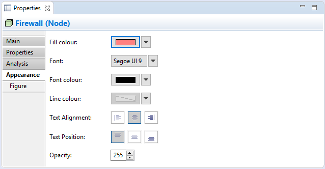

Selecting an element in a View means that you can edit or view additional visual properties in the Properties Window. Different visual settings can be applied to an element for each separate occurrence in a View. For example, the element "Application Service" may be coloured blue in one View, and grey in another View.
The Appearance Tab
Editing the "Appearance" Properties for an ArchiMate Element in a View
This tab is only available when an element is selected in a View.
| Fill colour: | Sets the fill colour for the selected element. The "Default" button sets the fill colour to the default setting. |
| Line colour: | Sets the colour of the line used to draw the selected element. The "Default" button sets the line colour to the default setting. If this is disabled it is because line colours are derived from the element's fill colour, as set in Preferences. |
| Gradient: | Sets the direction used to draw the gradient fill of the selected element. Settings are "None", "Top", Left", "Right" and "Bottom". Note - gradients will not show when a diagram is exported in SVG image format. |
| Text Alignment: | Align text in the selected element to Left, Centred or Right. |
| Text Position: | Align text in the selected element to Top, Middle or Bottom. |
| Font: | Sets the font used for the text in the selected element. The "Default" button sets the font to the default setting as set in Preferences. |
| Font colour: | Sets the colour of the font used for the text in the selected element. The "Default" button sets the font colour to the default setting. |
| Fill Opacity: | Set the fill opacity of the figure. Range from 0-255. |
| Outline Opacity: | Set the outline opacity of the figure. Range from 0-255. |
The Figure Tab

Setting the "Figure" Properties for a Device
This tab is only available when an element is selected in a View and only for certain figures.
Some elements can be represented by alternate figures. These are:
The default figure to use when creating new elements can be set in Preferences.